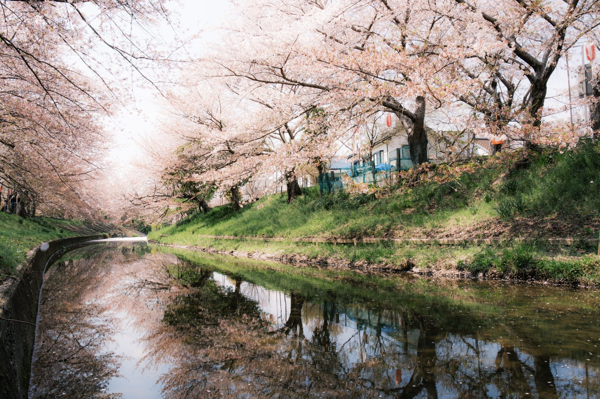
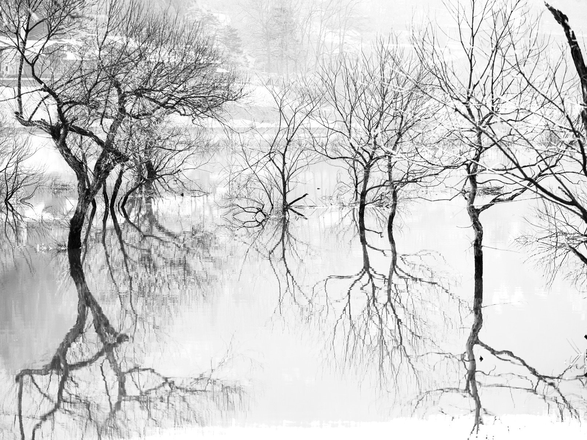

玄關· Genkan · Threshold
玄關Yeh Chung-Yang
一位研究者的書桌，一位攝影者的四季。
從任何一扇門，請進。
研究者の机、写真家の四季。お好きな戸口から。

山水 · 冬 影上之影Shadow upon Shadow一 Chapter · One
學術書院 ・ 案上的紙山Scholarship
東吳大學社會學系。福利國家與社會政策的研究者——在制度、階級與世代之間，尋找那些被數字遮蔽的生命。 東呉大学社会学部。福祉国家と社会政策の研究。
論文在此呼吸。一篇一篇，像冬日湖面倒映的枯木，安靜地把時代的輪廓留下。
進入書院 →二 Chapter · Two
攝影縁側 ・ 內外之際Photography
近三十年，與研究並行的另一種觀看。九個季節系列——春信、青嵐、紅葉、雪明、潮騒、山水、街、銀塩、Xpan——把走過的光留在底片上。 研究と並走してきた、もう一つの眼差し。九つの季節。
縁側是內與外的交界。庭園在此化作一冊書，一頁一頁地翻。
走上縁側 →同一條花徑，走過已是第幾回。 The same path of blossoms — how many times now.
 紅葉 · 秋
白與紅White and Crimson
紅葉 · 秋
白與紅White and Crimson
三 Chapter · Three
教學茶室 ・ 一期一会Teaching
小小的入口，大大的對話。課堂如茶室——一期一会，每一次相遇都只有這一次，於是格外鄭重。 小さな入口、大きな対話。一期一会の教室。
社會政策、比較福利、研究方法。把抽象的理論，泡成一盞可以入口的茶。
走進茶室 → 街 · 夜
夜屋台Night Stall
街 · 夜
夜屋台Night Stall
四 Chapter · Four
隨筆文庫 ・ 研究之外Essays
研究之外的隨筆與評論。關於社會、關於街角的一盞燈、關於那些不在論文裡、卻始終放不下的事。 研究の外側の、随筆と評論。街角の灯のこと。
夜的屋台亮起，蒸氣升騰——一個人的生活，仍在繼續。文字，是替它留下的一點溫度。
走入文庫 →